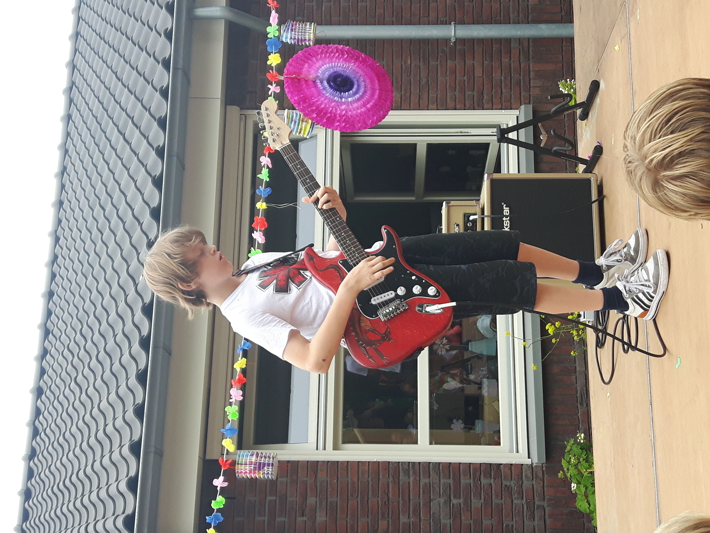
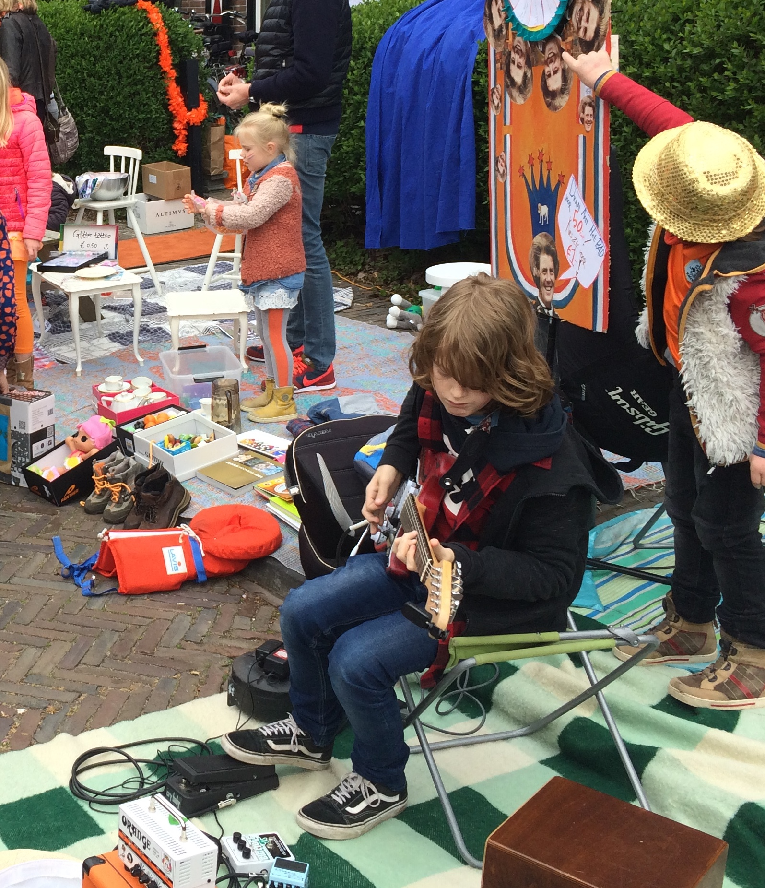
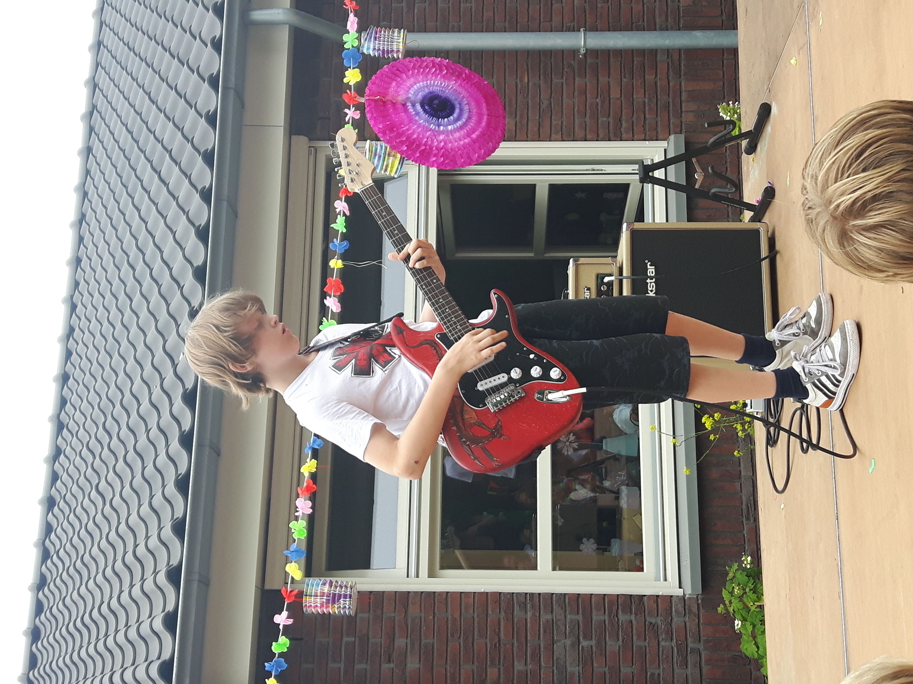
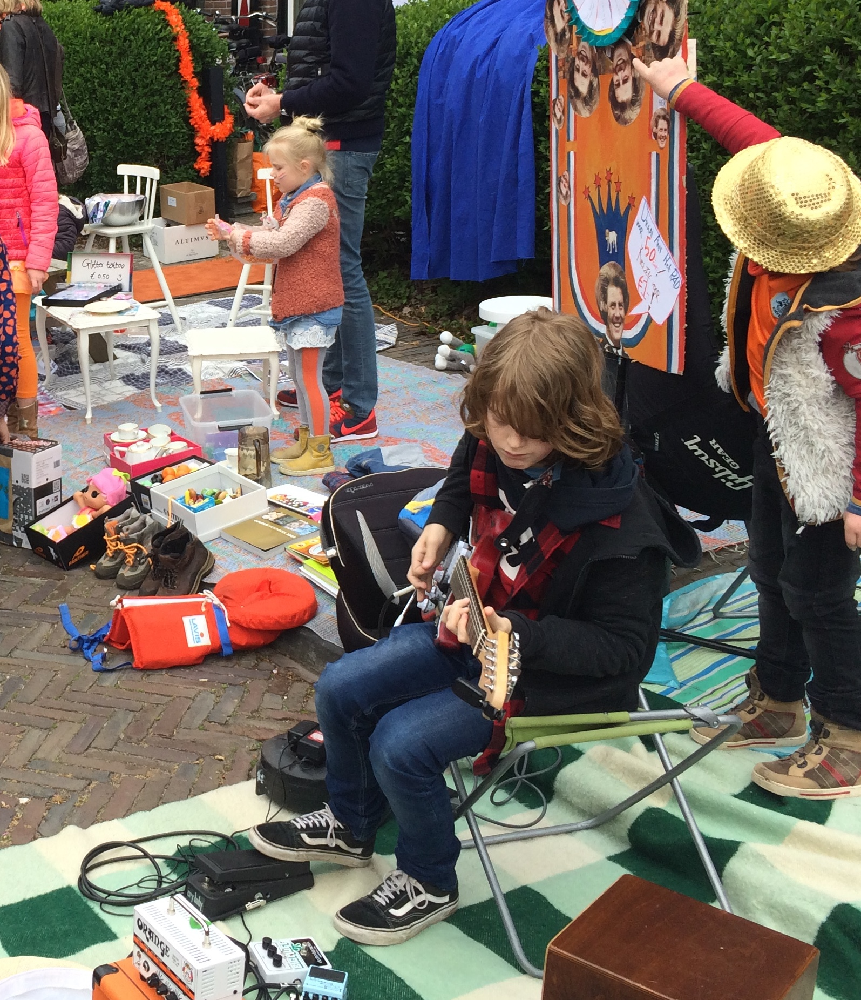

10-11-2005
Tweetalig opgevoed: Nederlands/Engels
ECL Haarlem 6 vwo
Stage bij PublicAudio, Week 41, 2022
Programma’s die ik kan gebruiken:
Logic Pro X, Pro Tools, MuseScore, Blender, Substance Painter, Krita, Photoshop, Premiere Pro,
After Effects, Lightroom, Davinci Resolve, Final Cut Pro
Programmeertalen:
C, C++, HTML en CSS
Instrumenten die ik kan bespelen:
Gitaar, Drums, Basgitaar en Piano
Gitaren die ik heb gebouwd met DIY paketten:
2014 Groene Les Paul
2015 Rode Stratocaster met draak
2017 Zwarte Basgitaar met ogen
2022 Zwarte Telecaster met Japanse draak
2022 Rode Strat omgebouwd naar witte Strat met Octopus en Fender onderdelen
2022 Zelfgemaakte Ts808
2014-heden Gitaar via Youtube o.a. Marty
Schwartz en Justin Guitar
2016-heden Gitaardocent Tim
William van
Ouwerkerk , gitarist o.a. Rilan &
the
Bombardiers / Rob Dekay.
“Ik zou Liam willen omschrijven als een muzikale en tevens intelligente jongen, die een
creatieve
manier
heeft van denken heeft met een sterke eigen mening en op deze manier ook problemen aanpakt.
Verder
is
z’n
interesse breed waardoor
hij naast muziek ook excelleert in tekenen/schilderen, maken van filmpjes, games ontwikkelen.
Zodra
hij
dus
iets leuk vindt, duikt hij er volledig in.”
2015-heden Muziekdocent Sven Keet, dirigent,
arrangeur, zanger en
beatboxer.
“Liam is enorm muzikaal en
getalenteerd en heeft een grote drive om zoveel mogelijk muziek te maken. Als multi
instrumentalist
beheerst
hij gitaar, drums, piano, beatbox en muziektheorie op hoog niveau. Ik ben heel benieuwd naar wat
Liam’s
muzikale loopbaan hem nog gaat brengen!”
2013-heden Muziekdocent Lisa Voet, zangeres.
“Liam is vindingrijk, creatief en schroomt niet om zichzelf nieuwe vaardigheden aan te leren, zo
ook
op
het
gebied van muziek.”
2018-heden Drumdocent Gustan
Asselbergs,
drummer en
schrijver.
“Ik heb Liam leren kennen als een enthousiaste en serieuze muzikant. Toen hij 3,5 jaar geleden
bij
mij
op
les kwam, viel mij meteen op hoe leergierig hij is. Van nature verdiept hij zich in
verschillende
onderwerpen, wat een mooie kwaliteit is. Dit maakt van hem een muzikant met een brede horizon.
Alles
wat
in
de drumles aan bod komt, kan hij zich gemakkelijk eigen maken.
Het is dan ook een plezier met hem te werken. Ingetogen, gevat, creatief,
goede oren en zeer intelligent.”
2021-heden Muziekdocent Daniel Roser, jazz
pianist.
“Liam is een briljante leerling van mij met wie ik muzikale structuren en vaardigheden train. Ik
speel
piano
en hij gitaar. Ik zoek voor hem elke les naar een muzikale uitdaging, die net achter zijn
kennishorizon
ligt. Altijd weet hij die nieuwe concepten of technieken op een kalme maar alerte wijze snel te
absorberen
en incorporeren. Hij is in veel opzichten een volwassen muzikant; goede timing, “snelle” oren en
een
brede
interesse voor veel stijlen.”
2016-heden Tekenleraar Pijke
Ileri, De Kleine
Academie.
“Liam is een nieuwsgierige jongen met een brede interesse. Daarnaast is hij altijd kritisch op
zichzelf.
Deze eigenschappen zijn terug te zien in zowel zijn muziek als zijn beeldend werk. Dingen die de
moeite
waard zijn om te doen, zijn de moeite waard om goed te doen. Zijn werk is origineel en
overtuigend.”
Week 41, 2022 Stage PublicAudio, Stagebegeleider
Laurens Lammers,
Sound Designer.
“Liam is intelligent, behulpzaam en muzikaal. Daarnaast ook nog eens technologisch vaardig, niet
schuw
om
nieuwe uitdagingen
aan te pakken en om te laten zien wat hij kan.”
Week 41, 2022 Stage PublicAudio, Rens Pluijm,
Senior
Sound
Designer.
“Liam sloot als stagiair naadloos aan bij ons team. Hij heeft in een
week tijd ongelofelijk veel creatieve potentie laten zien maar ook werklust en inzet getoond
voor de
wat
minder interessante klusjes binnen ons bedrijf. Liam is ontzettend leergierig en pakt dingen
razendsnel
op,
aan het eind van de week waren we eigenlijk al vergeten dat Liam nog op het VWO zat.
Liam Creed, onthoud die naam....
Naast alle begeleiding die ik krijg van docenten, begeleid ik mijn broer Jimmy Creed (16 jaar, Downsyndroom) met het leren van drums en bongo’s.